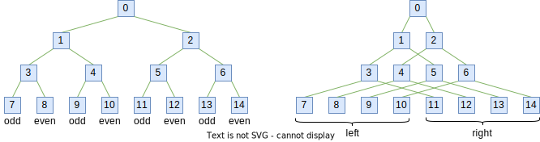
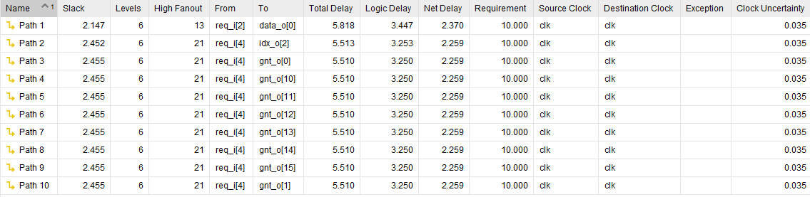
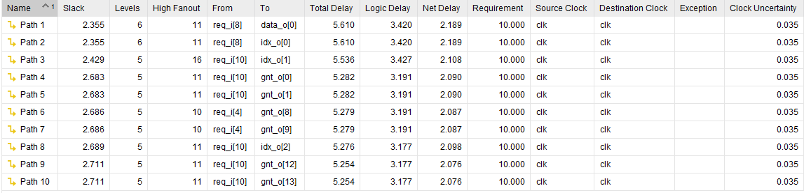
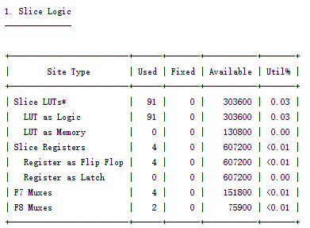
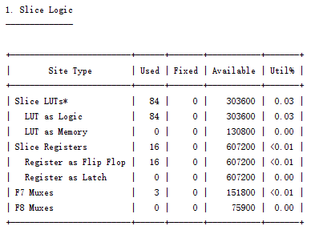

gnrc_arbiter
rr_q updating method, see the parameter EXT_RR and DEPTH.Parameters
parameter |
datatype |
range |
description |
|---|---|---|---|
N |
int unsigned |
>=1 |
Number of inputs to be arbitrated. |
DW |
int unsigned |
>=1 |
Data width of the payload in bits. Lose efficacy if |
EXT_RR |
bit |
{0,1} |
The |
LEAKY |
bit |
{0,1} |
If |
DEPTH |
int |
{0,1,2} |
There are three basic methods for updating the round-robin pointer:
Change DEPTH to set the updating method. |
DTYPE |
type |
logic [DW-1:0] |
Data type of the payload, can be overwritten with custom type. Only use of DW. |
AW |
int unsigned |
$clog2(N)+(N==1) |
Width of the arbitration priority signal and the arbitrated index. (auto-gen, do NOT change) |
IOs
signal |
I/O |
width |
description |
|---|---|---|---|
clk_i |
input |
logic |
Clock, positive edge triggered. |
rst_ni |
input |
logic |
Asynchronous reset, active low. |
flush_i |
input |
logic |
Clears the arbiter state. Only used if |
rr_i |
input |
logic [N-1:0] |
External round-robin priority. Only used if |
req_i |
input |
logic [N-1:0] |
Input requests arbitration. |
lock_i |
input |
logic [N-1:0] |
Input request locks. |
gnt_o |
output |
logic [N-1:0] |
Input request is granted. |
data_i |
input |
DTYPE [N-1:0] |
Input data for arbitration. |
req_o |
output |
logic |
Output request is valid. |
lock_o |
output |
logic |
Output request lock. |
data_o |
output |
DTYPE |
Output data. |
idx_o |
output |
logic [AW-1:0] |
Index from which input the data came from. |
gnt_i |
input |
logic |
Output request is granted. |
Derived from ‘rr_arb_tree’
此代码来自于对 rr_arb_tree 的修改，强烈建议先查看 源码 或其他介绍该源码的 相关文章 来初步了解该设计的基础原理
Arbiter
仲裁器Arbiter是数字设计中非常常见的模块，应用也非常广泛。定义就是当有两个或两个以上的模块需要占用同一个资源的时候，我们需要由仲裁器arbiter来决定哪一个模块来占有这个资源。一般来说，提出占有资源的模块要产生一个请求(request)，所有的请求送给仲裁器之后，仲裁器要返回一个许可(grant)。
仲裁器很重要的一点是只能让一个模块得到许可，因为这个资源某一时刻只能由一个模块占用。在数字电路中，总线仲裁是一个常见的例子，比如多个master要占用总线来去写数据，那么需要仲裁器来许可哪个master来占用总线。
lock_i
带有 lock_i 输入的仲裁器可以使被许可的请求者（granted requester）持续占用仲裁资源，当需要持续多个周期发送数据时，为避免发送过程中仲裁器切换许可， lock_i 的功能是必须的。
gnrc_arbiter 为 rr_arb_tree 拓展了 lock_i 的功能，这使得该仲裁器可以用在支持 packet mode 的 AXI4 Stream 等协议中。
Fix priority
固定优先级（Fix priority）顾名思义就是按照固定的优先顺序对同时发起请求的 requester 进行许可，一般 req_i 的低位优先级最高，也可以设置 EXT_RR 通过外部输入 rr_i 来自定义优先级，详见参数 EXT_RR 的说明。
Fix priority 在竞争激烈的情况下容易导致优先级低的 requester 一直得不到许可，出现“饿死”的情况。
Round Robin
轮询（Round Robin）仲裁器可以根据许可情况自动对各个 requester 的优先级进行旋转（rotate），使得每个 requester 都有机会成为最高优先级，增加了公平性。
Round Robin 内置一个寄存器 rr_q 来保存优先级最高（或最低）的 requester 的编码， 通过旋转 rr_q 来更新每个 requester 的优先级。 rr_q 主要有 3 种更新模式：
每许可一次，就将
rr_q指向下一个 requester。这种模式下rr_q就像一个不断 +1 的计数器，许可的顺序比较随机，有的情况下还是会出现一个 requester 持续占用好几个周期，其他 requester 只能等待的情况，公平性较差， rr_arb_tree 将之称为 unfair arbiter。
每许可一次，就将
rr_q指向当前许可 requester 的下一个 requester。这种模式下可以保证被许可过的 requester 在下一轮仲裁时的优先级最低，可以避免持续占用，但无法在时间顺序上保证公平。下图中的 req7 早于 req6， 但后到的 req6 却先获取了许可
每许可一次，就将
rr_q指向当前许可 requester 的下一个 有效的 requester。 这种模式下可以保证下一个 有效的 requester 一定会在下一个周期被许可，也许是一种更加公平的做法。
实际上三种更新策略没有绝对的优劣之分，更新模式越复杂电路也越复杂，设计者们可以在例化该模块时通过配置 DEPTH 参数自行选择3种更新模式的其中1种实现。
Coding of “rr_q”
rr_q 寄存器用于保存对当前优先级最高（或最低）的 requester 进行的编码， rr_q 的编码方式主要有 3 种：
二进制编码（Binary Code），也就是直接把最高（或最低）优先级 requester 的序号（idx）保存下来，这种编码只需要 ceil(log(N)) 的位宽，可以节省寄存器数量，在 rr_arb_tree 中就是采用了这种编码。但是这种编码在进行许可（
gnt_o）时还是需要译码为向量形式，增加了产生许可的电路面积。 rr_arb_tree 取巧地使用二进制编码直接产生 grant ，避免对二进制进行译码，虽然减少了电路面积，但没有完全实现按优先级顺序来给予许可， 其中可能出现的问题会在 Select “req_o” out of many “req_i” 小节讨论。 其次 rr_arb_tree 还使用 2 个 leading zero counter 电路来产生下一个有效的 requester 的 idx，也是带来了额外的开销。独热码（One-hot code），独热码是一种向量形式的编码，需要 N 的位宽，只在最高（或最低）优先级的 requester 对应比特为 1 ，其余比特为 0，独热码就是二进制编码的译码后的形式。由于仲裁器的许可（
gnt_o）信号本身就是独热码，因此使用独热码作为rr_q是很方便的，并且独热码只需要进行移位即可实现优先级的旋转。但独热码还是无法直接用于产生仲裁许可。温度计码（Thermometer Code），温度计码通过看编码中“有多少个连续的1”来表示数字（就像人们数数时，竖起手指数一样）。温度计码的这种特性可以被仲裁器作为掩码（mask）来使用。例如当
rr_q中的温度计码为“1111_1000”时，通过与输入req_i按位相与，就能将req_i分为两组，一组是温度计码中 “1” 所对应的比特，另一组是 “0” 所对应的比特，其“1”组对应的请求优先级比“0”组要高。通过改变温度计码的1的数量就能实现优先级的旋转，这也能通过移位来实现。相较于独热码，温度计码能直接参与树形结构中生成sel信号的逻辑运算，也能很方便地将 grant_o 信号转化为温度计码的形式（实际上为了缩短关键路径，在 gnrc_arbiter 中，温度计编码的rr_q是使用了与生成gnt_o信号类似的另外一块电路来产生的）。 因此 gnrc_arbiter 将rr_q的编码方式改为了温度计码，避免了 rr_arb_tree 中对二进制码的额外译码开销以及 leading zero counter 电路的开销。
Binary |
One-hot |
Thermometer(Big-endian) |
|---|---|---|
000 |
0000_0001 |
0000_0000/1111_1111(overflow) |
001 |
0000_0010 |
1000_0000 |
010 |
0000_0100 |
1100_0000 |
011 |
0000_1000 |
1110_0000 |
100 |
0001_0000 |
1111_0000 |
101 |
0010_0000 |
1111_1000 |
110 |
0100_0000 |
1111_1100 |
111 |
1000_0000 |
1111_1110 |
Tree-style structure
使用树形结构可以缩短仲裁选择电路的关键路径长度，参考FFT（Fast Fourier Transformation)和IFFT（Inverse FFT）中的蝶形计算网络，树形网络是其中的一个子集，存在以下两种构造方式，图中所有的正方形节点可视为 2选1 MUX 或 DeMUX。
上图左侧为一棵 odd-even tree（自己起的名字），因为它按照节点的奇偶性进行分组， odd-even tree 可以保证叶子节点的顺序在传播过程中不被破坏。
上图右侧为一棵 left-right tree（也是自己起的名字），因为它把每层的节点进行左右分组，左侧节点对应一个右侧节点接入下一层。 虽然 left-right tree 不能保证叶子节点的顺序，但这一特性反而可以用在需要对数据顺序进行交换的场合。
由于仲裁器需要维持 requester 本身的顺序，因此使用 odd-even tree 来进行产生所需要的信号是比较方便的。
Select “req_o” out of many “req_i”
从一颗 odd-even tree 的叶子节点出发，将 req_i 依次输入各个叶子节点，经过多层 MUX 选择，最终在树根产生被许可的 req_o 输出。
原始的 rr_arb_tree 的选择判断条件是有缺陷的，无法保证叶子节点中按 req_i 从低位（左）到高位（右）的优先顺序选取。下面是 rr_arb_tree 中每个节点产生选择信号的逻辑，因为 rr_arb_tree 中的 rr_q 是二进制编码的，为了避免译码开销，rr_arb_tree 直接用二进制的比特作为条件，只有当 rr_q 所对应的最高优先级 req_i 信号为 1 时，该电路才能正常工作，否则选择出的 req_o 顺序是混乱的。
// Idx1 is odd node idx, Idx1 + 1 is even node idx
localparam int unsigned Idx1 = 2**(level+1)-1+l*2;
// sel = 1 select even node, otherwise select odd node
assign sel = ~req_nodes[Idx1] | req_nodes[Idx1+1] & rr_q[NumLevels-1-level];
如下图所示，若 rr_q 存储的最高优先级 idx 为 3 ，那么在 req_i[4] 和 req_i[5] 同时拉高的情况下，正确的输出应该是将 req_i[4] 选择出来，但 rr_arb_tree 的电路则会选择 req_i[5] 。这是因为 rr_arb_tree 没有对 rr_q 的二进制编码进行译码，判断条件中缺少了最高优先级以外的顺序信息。
gnrc_arbiter 为了实现完全的轮询仲裁，使用温度计码代替二进制码用于产生选择信号， Coding of “rr_q” 中提到，温度计码可以作为掩码使用，将输入的 req_i 向量分为两组，掩码为”1”的比特位优先级高于掩码为”0”的比特位。若掩码相同，则按照从低位（左）到高位（右）的优先顺序选取。整理出来的选择信号真值表如下。
req[odd] |
req[even] |
mask[odd] (rr_q) |
mask[even] (rr_q) |
sel |
|---|---|---|---|---|
0 |
1 |
x |
x |
1 |
1 |
0 |
x |
x |
0 |
0 |
0 |
0 |
0 |
0 |
0 |
0 |
0 |
1 |
1 |
0 |
0 |
1 |
0 |
0 |
0 |
0 |
1 |
1 |
0 |
1 |
1 |
0 |
0 |
0 |
1 |
1 |
0 |
1 |
1 |
1 |
1 |
1 |
0 |
0 |
1 |
1 |
1 |
1 |
0 |
gnrc_arbiter 使用的产生选择信号的代码如下。
// Idx1 is odd node idx, Idx2 is even node idx
localparam int unsigned Idx1 = 2**(level+1)-1+l*2;
localparam int unsigned Idx2 = 2**(level+1)-1+l*2+1;
// sel = 1 select even node, otherwise select odd node
assign sel = req_nodes[Idx2] & ~req_nodes[Idx1]
| req_nodes[Idx2] & mask_nodes[Idx2] & ~mask_nodes[Idx1]
| ~req_nodes[Idx1] & mask_nodes[Idx2] & ~mask_nodes[Idx1];
在相同的情况下，使用温度计码作为掩码，req_i[4] 和 req_i[5] 的掩码都为 1，MUX节点会优先选择低位的 req 请求，最终按照正确的轮询顺序输出仲裁结果。
Generate next “rr_q”
rr_d 是 rr_q 寄存器的输入，用于产生下一个时钟周期的”rr_q”。
在 rr_arb_tree 中， 输入 req_i 被根据 rr_q 编码为两组 upper_mask 和 lower_mask 信号（这一点与温度计码的作用类似），然后分别送入一个 leading zero counter ，最后在两个 lzc 的输出中选择一个作为 rr_d 。
由于 rr_arb_tree 使用的二进制编码，因此产生 rr_d 的过程较为复杂，如果直接将温度计码保存在 rr_q ，就可以像 Select “req_o” out of many “req_i” 中描述的类似电路，只通过一个树形结构来生成 rr_d 。
使用树形结构生成温度计码，需要记录下从叶子到根节点的选择路径（也就是每个节点的sel信号），然后倒推过来将被选中的叶子节点所对应的 bit 置1，同时对于在被选中的叶子节点更高位上的叶子节点，其对应 bit 也需要被置1，这就需要额外的信息来辨别哪些节点是处在选择路径的高处。
gnrc_arbiter 中使用 gnt_nodes 来记录选择路径，使用 rr_nodes 来标记那些处于选择路径高位上的节点，判断逻辑如下。
// start by root node
assign gnt_nodes[0] = gnt_i;
assign rr_nodes[0] = 1'b0;
// for level in tree
for (genvar level = 0; unsigned'(level) < NumLevels; level++) begin : gen_levels
// for node in level
for (genvar l = 0; l < 2**level; l++) begin : gen_level
// index calcs
localparam int unsigned Idx0 = 2**level-1+l;// current node
localparam int unsigned Idx1 = 2**(level+1)-1+l*2;// odd node from upper Level connected to Idx0
localparam int unsigned Idx2 = 2**(level+1)-1+l*2+1;// even node from upper Level connected to Idx0
assign gnt_nodes[Idx1] = gnt_nodes[Idx0] & ~sel;
assign gnt_nodes[Idx2] = gnt_nodes[Idx0] & sel;
assign rr_nodes[Idx1] = rr_nodes[Idx0];
assign rr_nodes[Idx2] = rr_nodes[Idx0] | gnt_nodes[Idx0]&~sel;
end
end
最终 rr_d 取决于最下层的 gnt_nodes 和 rr_nodes，如果对应的 rr_nodes 为1，则说明子树所有节点都在被选中的节点的更高位，对应的 rr_d bit位可以 直接置1，否则根据选择路径来判断，若选择的是 odd node，则将 rr_d 中下一级子树中的 odd node 和 even node 对应的bit都置1，若选择的是 even node，则只将 rr_d 中 even node 对应的bit置1。
// start by root node
assign gnt_nodes[0] = gnt_i;
assign rr_nodes[0] = 1'b0;
// for level in tree
for (genvar level = 0; unsigned'(level) < NumLevels; level++) begin : gen_levels
// for node in level
for (genvar l = 0; l < 2**level; l++) begin : gen_level
// lowest level
if (unsigned'(level) == NumLevels-1) begin
assign rr_d[l*2] = rr_nodes[Idx0] | gnt_nodes[Idx0]&~sel;
assign rr_d[l*2+1] = rr_nodes[Idx0] | gnt_nodes[Idx0];
end
end
end
还是来看之前的例子，产生 rr_d 的信号路线如下图所示。
Generate “gnt_o”
产生 gnt_o 的逻辑就是上面的 gnt_nodes 对应的绿色路径。
From highest to lowest
若需要把最高优先级的 requester 变为最低优先级，只需要将 rr_q 向高位移动1bit。
// rr_q shift using method 1
// -2 = {{N-1{1'b1}},1'b0}
assign rr_d = rr_q[N-1] ? -2 : {rr_q[N-2:0],1'b0};
在 rr_q 的第3种更新方式中（对应 DEPTH= 2 ），需要将当前许可 requester 的下一个 有效的 requester 设置为最高优先级，因此需要分别产生当前许可的 requester 作为 gnt_o 和下一个有效的 requester 作为 rr_d 。 此时需要分别用两个树型结构，一个正常使用 rr_q 作为 mask 寻找当前许可的 requester ，另一个使用左移一位的 rr_q 作为 mask 寻找下一个有效的 requester 。
Timing & Area
在 N=16 ， DW=1 ， DEPTH=2 （对应rr_arb_tree FairArb=1 ）的配置下，使用vivado综合，芯片xc7vxt485ffg1157-1，100MHz时钟约束，所有输入设置2ns input delay，输出为0ns output delay
Timing的结果（前面的是 rr_arb_tree ，后面的是 gnrc_arbiter）
 area的结果（前面的是 rr_arb_tree ，后面的是 gnrc_arbiter）
 
{kind=link}
{kind=link}
{kind=link}
{kind=link}
可以看出 timing 和 LUT 使用量略胜一筹，但正如 rr_arb_tree 注释中所述：
/// * The trailing zero counter (`lzc`) has a loglog relation of input to output timing. This means
/// that in this module the input to register path scales with Log(Log(`NumIn`)).
/// * The `rr_arb_tree` data multiplexing scales with Log(`NumIn`). This means that the input to output
/// timing path of this module also scales scales with Log(`NumIn`).
/// This implies that in this module the input to output path is always longer than the input to
/// register path. As the output data usually also terminates in a register the parameter `FairArb`
最长的路径一般都在 input 到 output 之间的数据通路上，而在这一方面 gnrc_arbiter 和 rr_arb_tree区别不大。